| 日付 | 2018年3月3日（土） - 2018年3月4日（日） |
|---|---|
| メンバー | 家族（妻、長女・7歳、長男・4歳） |
| アクセス | 車 |
今年2回目のスキー旅行に行く。
これまで中央道エリアを中心に行っていたので
今回は趣を変えて、東北道で北に向かってみる。
このエリアは近場にあまりスキー場が無いのだが、
数少ないスキー場の1つ、グランディ羽鳥湖
スキーリゾートに行ってみることにする。
1日目
9時半過ぎに駐車場に到着。幸い道路は全く混まなかった。
駐車場の車は多く、比較的賑わっている。
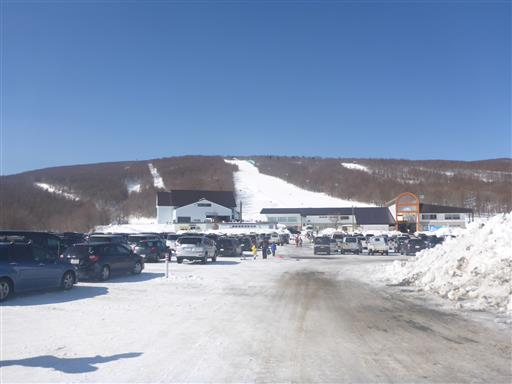
除雪された雪が巨大な山になっている。
雪の量は多いが気温は高い。3月に入って急に暖かくなり、
スキーウェアを着なくても寒くないくらいだ。
雪のコンディションがちょっと心配だ。
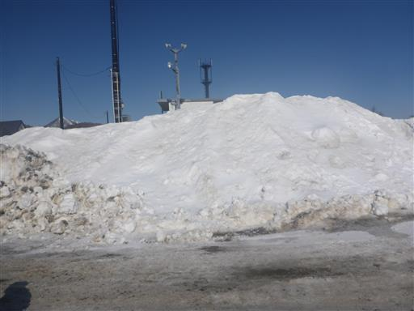
10時のスキースクールにぎりぎり間に合ったため、子供たちを預ける。
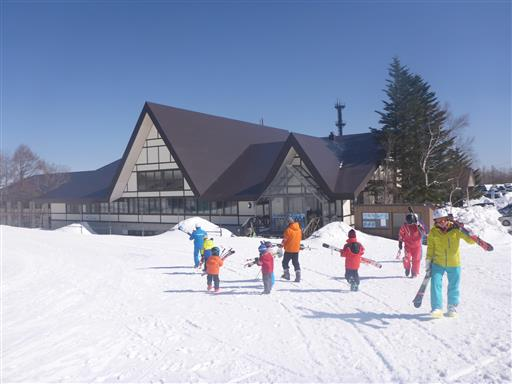
子供をスクールに預けたので、1日目は自由に滑れる。
まずはリフトで上まで移動。今日は見事な快晴だ。
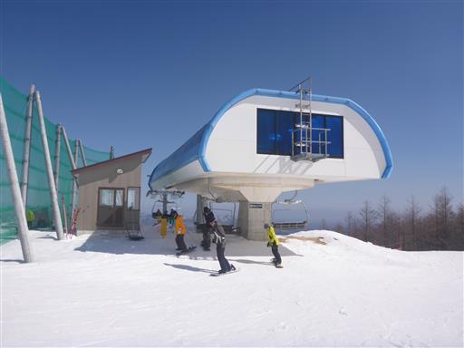
見下ろす景色は素晴らしい。
広いスキー場のためゲレンデは比較的空いている。
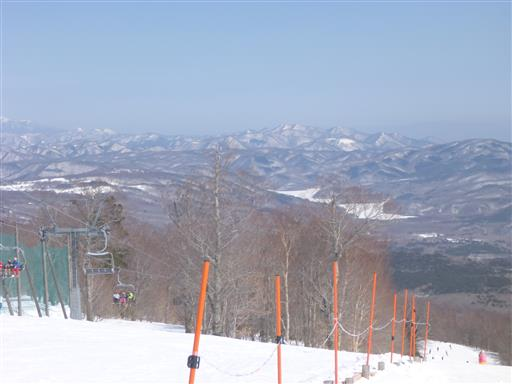
昼食はレストランで。食事に力を入れているらしく、確かにスキー場にしてはおいしかった。
混雑しすぎていないのも良いところだ。
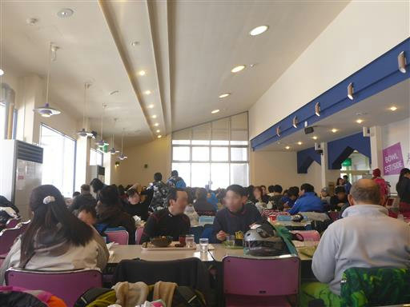
午後からもスキー。雪がまるで波のようだ。
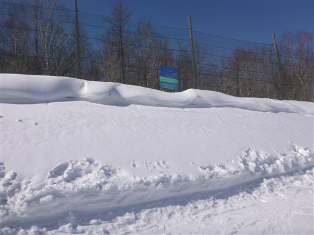
林間コースを滑る。気持ちの良いコースだ。
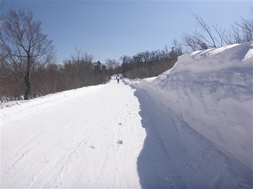
遠くに大きな雪山が見える。東北の名峰・安達太良山だ。
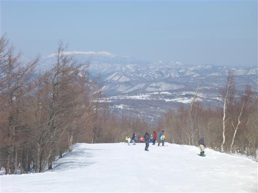
スキースクール終了。子供たちはスキー場に作られた鎌倉で遊びだす。
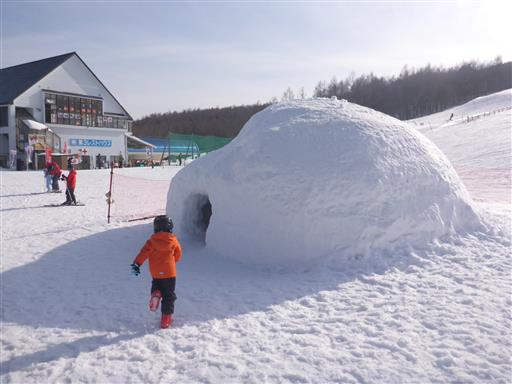
鎌倉の内部は結構広い。

お次は雪山で遊びだす。
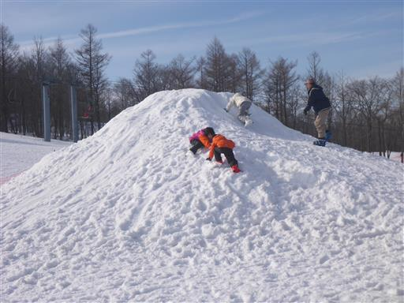
滑り台を滑る。普段はもう公園で滑り台を滑ることはないが、雪だと楽しいようだ。
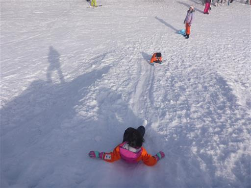
雪で存分に遊んだら本日の宿・もめんのおうちに移動する。
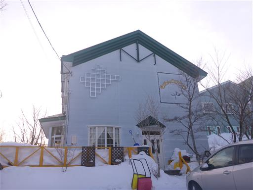
この辺りはペンションがたくさん並んでいる。
オープンしている宿の前しか除雪されていないため、雪の壁ができている。
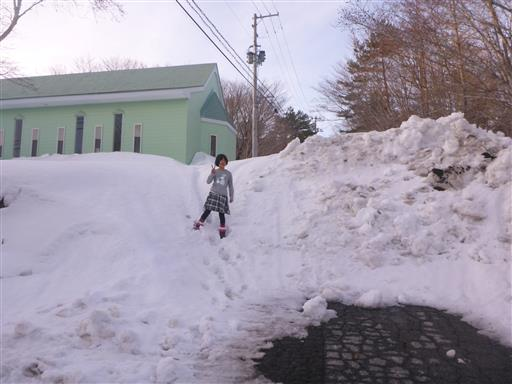
道路は深い雪に埋もれている。積雪量は2m程度だろう。

この宿には子供部屋があり、様々なおもちゃが並んでいる。
息子はゲームのコントローラーを持ったら離さない。
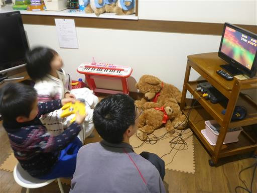
2日目
本日も快晴。スキー場に着いたのは9時半でスキー場の近くに宿泊したのに
到着時間は昨日とほとんど変わらない…
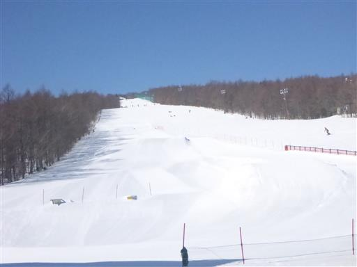
今日は家族で滑る。早速みんなでリフトに乗る。
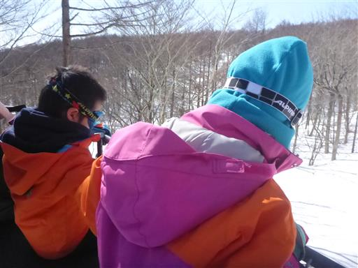
子供たちは雪の下に点々と付いているウサギの足跡を見て喜んでいる。
昨日スキースクールで教わったらしい。
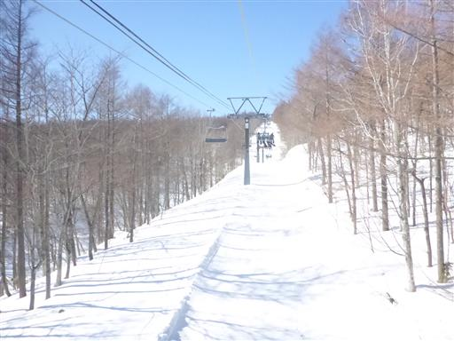
早速滑り始める。息子は自分の意志で曲がれるようになっていて、だいぶ上達している。
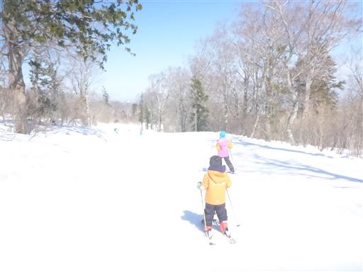
慣れてきたら少し急斜面を滑ってみる。2時過ぎまで滑って撤収する。
道もスキー場もほとんど混雑せず、子供たちもスキーが上達してよかった。
おそらく今年のスキーはこれが最後だが、来年まで滑り方を覚えていて欲しい。
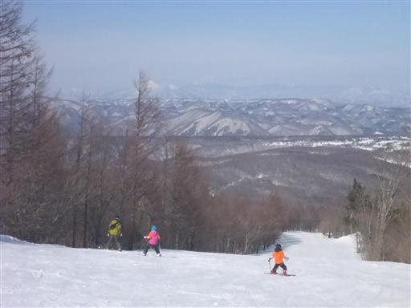